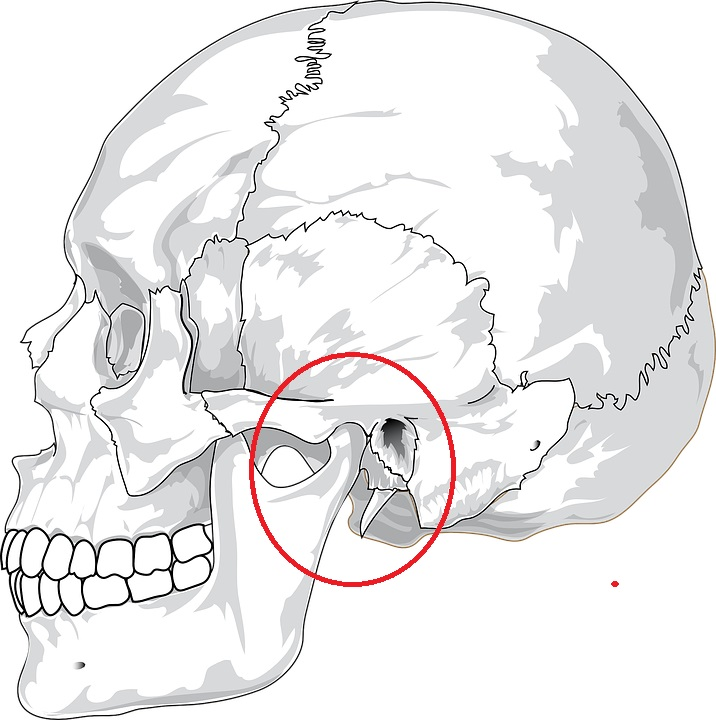

A Disfunção têmporo-mandibular (DTM), também conhecida como dor na ATM, é causada por um distúrbio na articulação têmporo-mandibular, que é responsável por unir o maxilar ao crânio. Esta síndrome gera desconforto na região da face e da mandíbula, dor de cabeça persistente, estalos ao abrir a boca e pode, até, levar ao surgimento de labirintite e zumbidos.
Qualquer problema que impeça o funcionamento correto desta articulação pode causar a disfunção têmporo-mandibular, sendo que uma das causas mais comuns são apertar muito os dentes durante o sono, ter tido alguma pancada na região ou o hábito de roer unhas, por exemplo. O tratamento para a dor na ATM é feito com a colocação de uma placa rígida que recobre os dentes para dormir, sendo também importante a realização de fisioterapia com exercícios de reprogramação postural.
Os sintomas de que há algum comprometimento da ATM são:
Dor de cabeça logo ao acordar ou ao fim do dia;
Dor na mandíbula e na face ao abrir e fechar a boca, que piora ao mastigar;
Sensação de rosto cansado durante o dia;
Não conseguir abrir a boca completamente;
Ter um lado da face mais inchado;
Dentes desgastados;
Desvio da mandíbula para um dos lados, quando o indivíduo abre a boca;
Estalos ao abrir a boca;
Ter dificuldades em abrir a boca;
Vertigem;
Zumbido.
Causas
O hábito de apertar muito os dentes é instintivo quando há sentimento de raiva ou de revolta, mas pode ser um hábito noturno que o indivíduo possui e muitas vezes nem sabe. Este hábito é chamado de Bruxismo, e um dos seus sinais é ter os dentes muito desgastados.
Mas existem outras causas para o surgimento da dor na ATM, como a mastigação incorreta, ter tido alguma pancada na região, dentes muito tortos que forçam os músculos da face, o hábito de roer unhas e de morder os lábios.
Tratamento
Para tratar a dor na ATM recomenda-se sessões de fisioterapia, massagem para relaxar os músculos da face e da cabeça e uso de uma placa de acrílico feita à medida pelo dentista, para uso noturno. O uso de medicamentos anti-inflamatórios e relaxantes musculares pode ajudar durante a fase aguda de dor, para aliviar os sintomas.